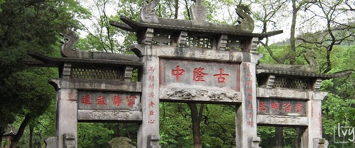
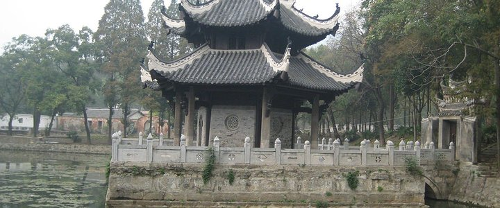
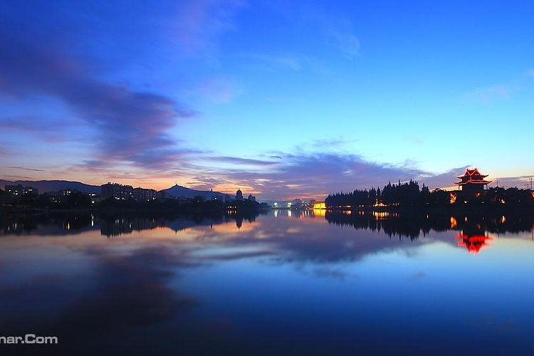

{display :box;
box-orient:horozontal
}
古隆中
4A景区 古隆中是三国时期杰出政治家、军事家诸葛亮青年时代（17—27岁）隐居的地方。诸葛亮抱膝高吟躬耕陇亩长达10年之久。诸葛亮本是山东琅琊人，幼年失去了双亲，后随叔父至荆州，17岁叔父亡，来到襄阳隆中，躬耕苦读，留意世事，被称为“卧龙”。后来刘备三顾茅庐，诸葛亮全面分析了当时三分天下的局势，提出了一统天下的谋略，这就是著名的《隆中对》。 现在的古隆中是一个以诸葛亮故居为主体的风景名胜区，在鄂西北历史文化名城襄阳市与南漳、谷城交界处，总面积209平方公里。古隆中形成文物风景旅游区已有一千七百多年的历史，
习家池

别名高阳池馆。在襄樊市襄阳城南5公里。是一处古代私家园林。东汉初年襄阳侯习郁在此建造府第时，引白马泉凿池养鱼，于池中筑钓台，地侧建馆舍，列植松竹，作为游宴之所。西晋永嘉年间（307-312），山简镇守襄阳时，常在此饮宴，并取汉初郦食其自号“高阳酒徒”之意，改名高阳池馆。东晋时，习郁的后裔习凿齿读书于此，并在附近的谷隐寺著成《汉晋春秋》一书，因而使此池益负盛名。由于年久废坏，明清以来曾多次重建，现存白马泉、观鱼池、芙蓉台和六角亭及部分祠馆建筑，多为清道光五年（1825年）疏浚修复。
春秋寨

春秋寨又名青云寨、陆坪寨，是举世闻名的南漳古山寨群的杰出代表，为中国“百大新发现”之一，它因寨内建有纪念关公的建筑春秋楼而得名。这里 “水作青罗带，山如碧玉簪”，蓝天白云，秀水苍崖，敌楼古堡，交相辉映，美不胜收，人文景观和自然景观珠联璧合，实为罕见的世界奇观。其壮美被专家们誉为“凌驾于泰山天街、华山北峰之上”，中国乃至世界最美的古山寨。